Duomenų ežerai
lekt. Šarūnas Kasnauskas, 2018Duomenų sandėliavimas

Didieji duomenys

Tradicinės prieš Didžiųjų duomenų sistemas

Didžiųjų duomenų įgalinimo sąlygos
- Technologijos, kurios įgalina orgnazaciją gauti, talpinti, apjungti ir praturtini didelius kiekius nestruktūruotų ir struktūruotų neapdorotų duomenų, turi egzistuoti
- Turi egzistuoti galimybė analizuoti tuos didelius duomenų kiekius iteratyviu būdu realiu arba beveik realiu laiku
Duomenų ežeras (Data lake)
Duomenų ežeras, tai didžiulė duomenų saugykla talpinanti įvairių tipų duomenis neapdorotu pavidalu, taip pat darant juos pasiekiamus organizacijos analizei
Argumentai už duomenų ežerą
- Tradicinis duomenų sandėlis nėra sukurtas atlaikyti eksponentiškai augančių, skirtingai struktūruotų duomenų integravimą
- Schemos iškart (schema-on-write) metodas naudojamas tradicinėse sistemose verčia duomenų modelį sukurti prieš duomenų įkrovimą
- Tradicinio metodo pokyčių realizavimas atsiradus naujiems reikalavimams tampa imlus laikui ir pinigams
ETL vs ELT (Extract, Load & Transform
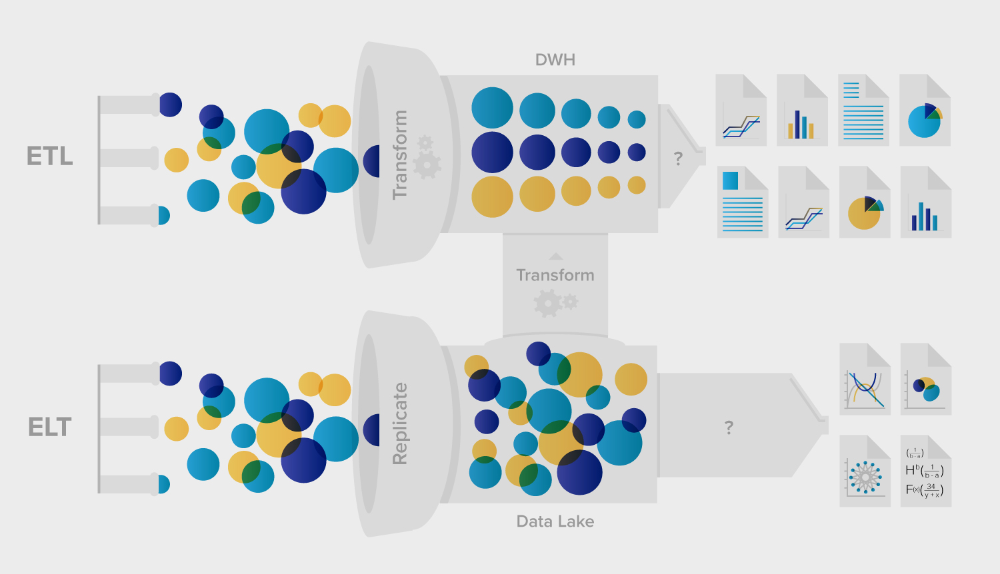Duomenų sandėlio pranašumai
- Technologiškai neribojamas mastas
- Skirtingų duomenų šaltinių naudojimas
- Greitų duomenų pasiekimas
- Talpinimas gimtaisiais formatais
- Nesirūpinimas apie schemas
Transformavimo žingsnio sudedamosios dalys
- Išvalymas (Cleansing)
- Transformavimas (Transformation)
- Praturtinimas (Enrichment)
Išvalymas
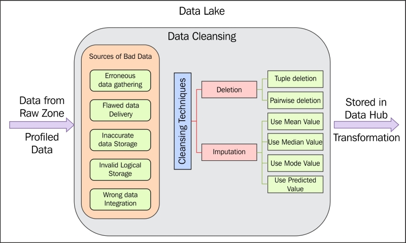Transformavimas
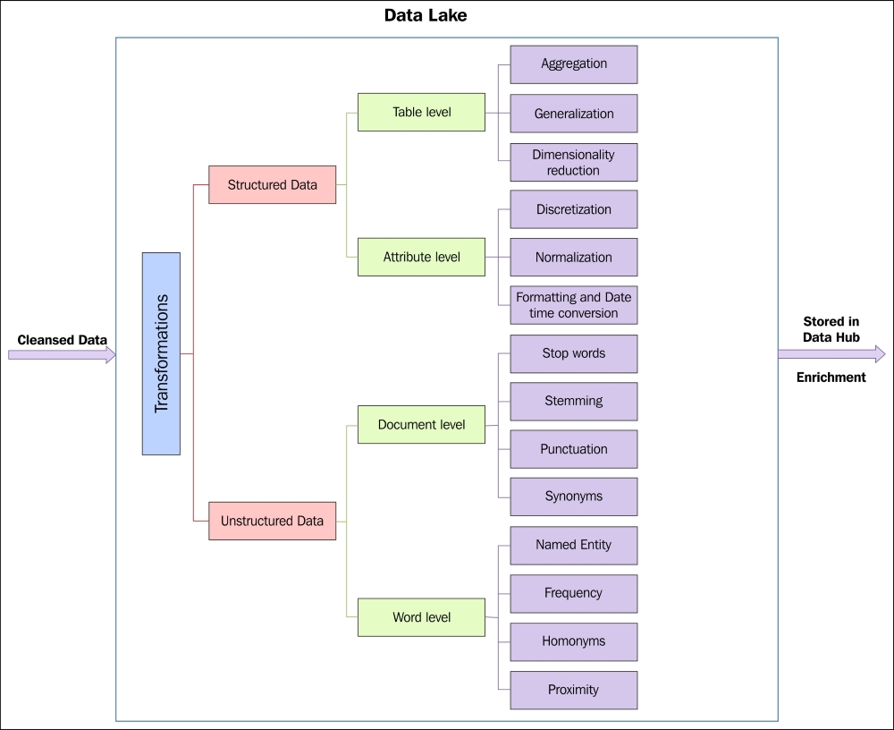Praturtinimas
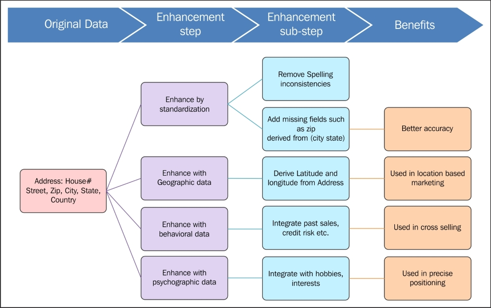Didžiųjų duomenų talpinimo principai
Paskirstytos failų sistemos (Distributed file systems)
Sistema (Klasteris), leidžianti tvarkyti failus, laikomus daugelyje įvairių serverių. Naudotojui pateikiamas bendras visuose serveriuose esančių failų vaizdas, tarsi visi jie būtų jo kompiuteryje.
Duomenų bazės šukė (sharding)
Tai horizontalus duomenų skaidymo būdas, kai didelis duomenų rinkinys skaidomas į mažesnius rinkinius - šukes (šardus)
Dubliavimas (Replication)
Tai kelių duomenų rinkinio kopijų talpinimas skirtingose vietose/mazguose (nodes)
Paskirstytos failų sistemos siekiamybės
- Skaidinių tolerancija (Partition tolerance) - sistema gali toleruoti komunikacijos tarp mazgų išjungimą
- Darna (Consistency) - bet kurio mazgo duomenų nuskaitymo (read) rezultatas yra tas pats
- Prieinamumas (Availability) - kiekviena nuskaitymo ar įrašymo užklausa yra patvirtinama veikiančio mazgo atsakymu
Skaidinių tolerancija (Partition tolerance)
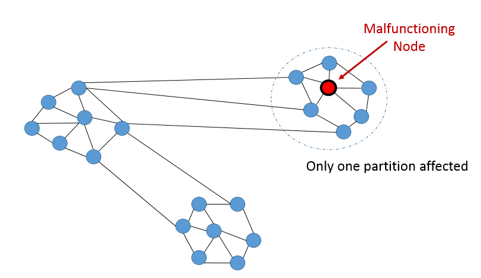Darna (Consistency)
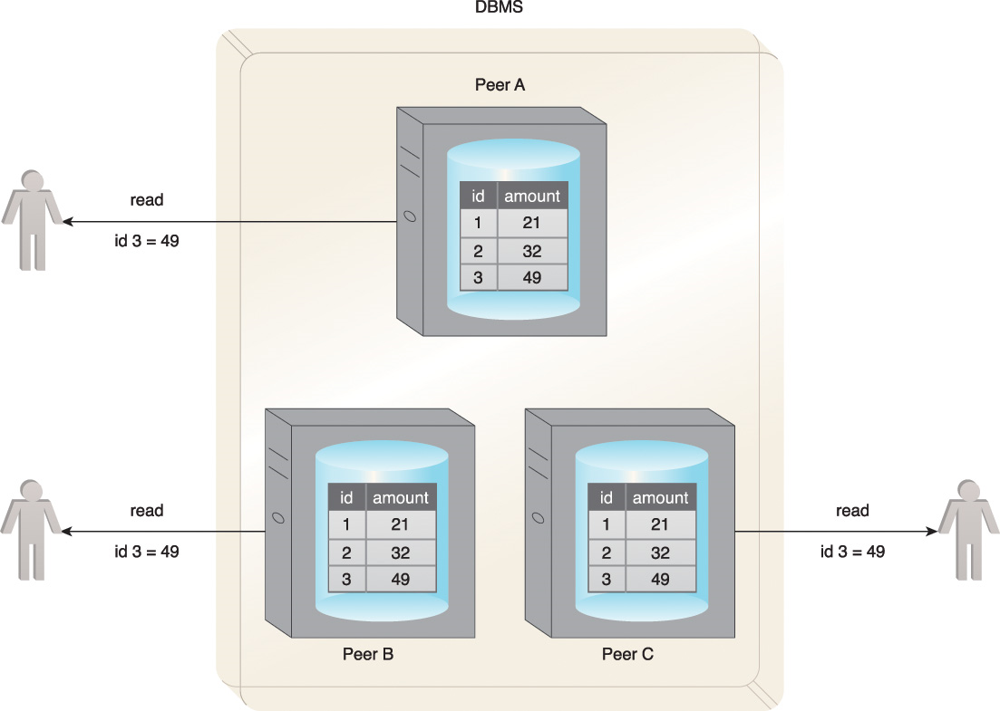Prieinamumas (Availability)
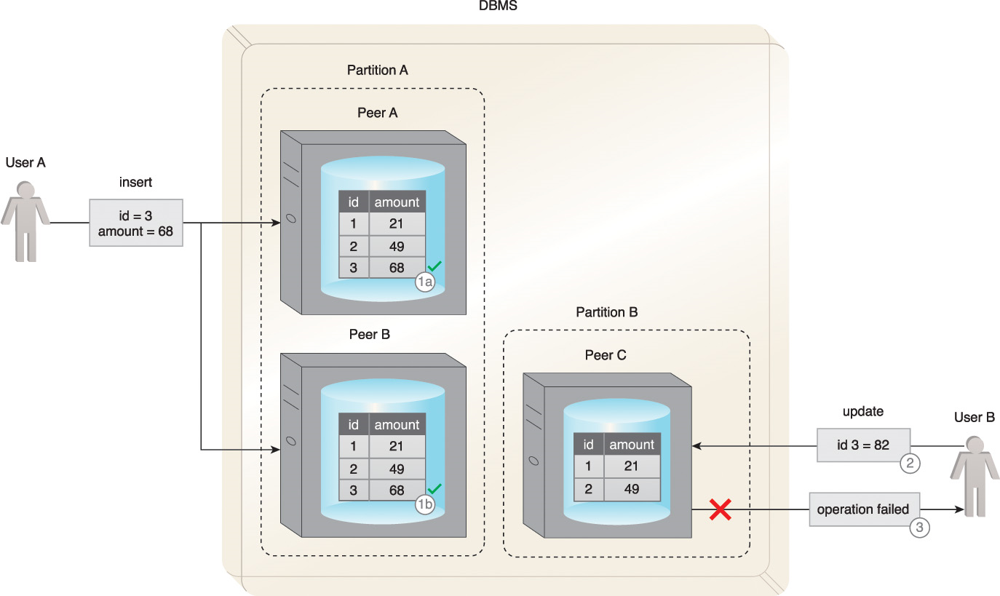CAP
teorema
Viena paskirstyta failų sistema gali patenkinti tik dvi iš trijų savybių: darna, prieinamumas, skaidinių tolerancija
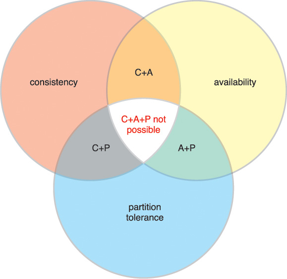Didžiųjų duomenų apdorojimas
Lygiagretus (parallel) apdorojimas
Tai kelių smulkių užduočių, kurios priklauso vienai jas apimančiai užduočiai, atlikimas vienu metu (dažniausiai viename kompiuteryje, keliuose procesoriuose)
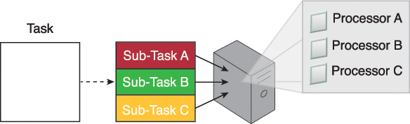Paskirstytas (Distributed) apdorojimas
Tai bendras kelių kompiuterių veikimas vykdant tą pačią užduotį
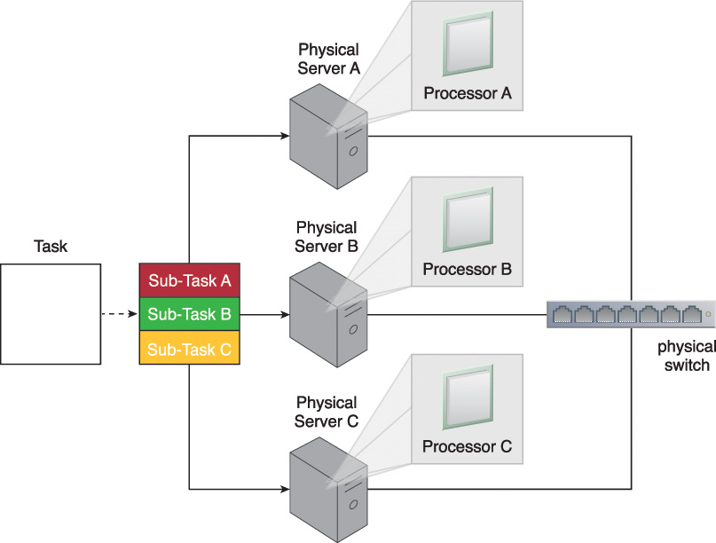Hadoop ekosistema

Hadoop sistema
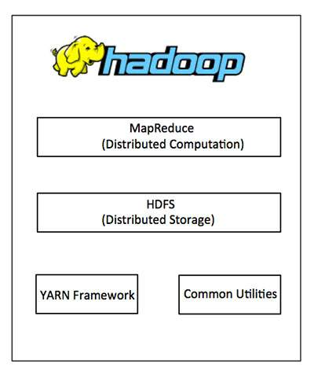Map-reduce
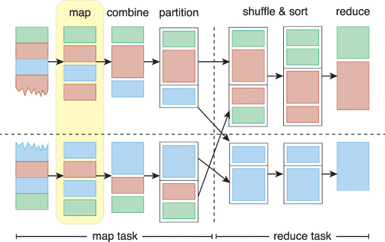Map-reduce
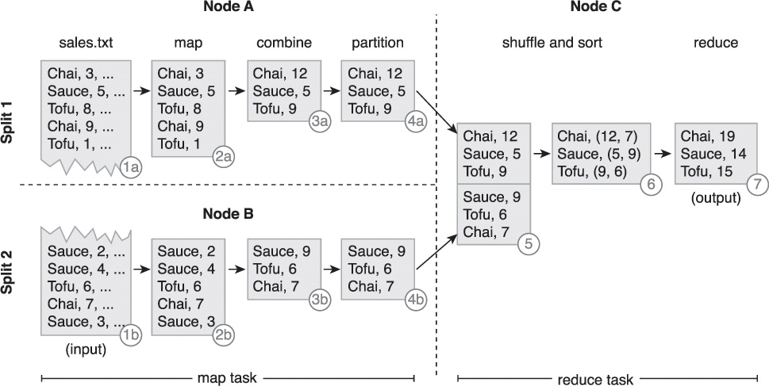Apdorojimas diske prieš operatyviąją atmintį
 Pvz.: Apache Spark
Pvz.: Apache Spark
Paketinis prieš realaus laiko apdorojimą
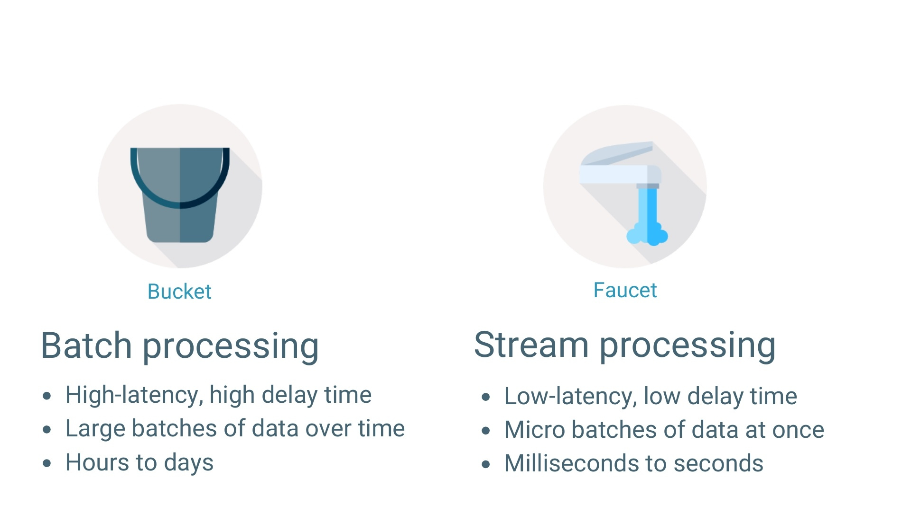 Pvz.: Apache Storm, Apache Flink, Apache Samza,..Paskirstyto duomenų apdorojimo siekiamybės
- Greitis (Speed) - sistema turėtų gebėti iškart apdoroti naujai sugeneruotus duomenis
- Darna (Consistency) - sistema turi apdoroti duomenis taip, kad galutiniai rezultatai būti tikslūs (atitiktų realybę) ir preciziški (vientisi tarpusavyje)
- Apimtis (Volume) - sistema gali apdoroti didžiulį duomenų kiekį
SCV
principas
Paskirstyto duomenų apdorojimo sistema gali palaikyti tik du iš trijų reikalavimų: greitis, darna ir apimtis
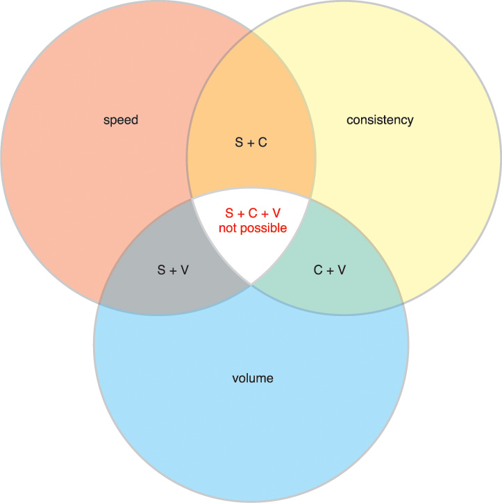Lambda architektūros pavyzdys
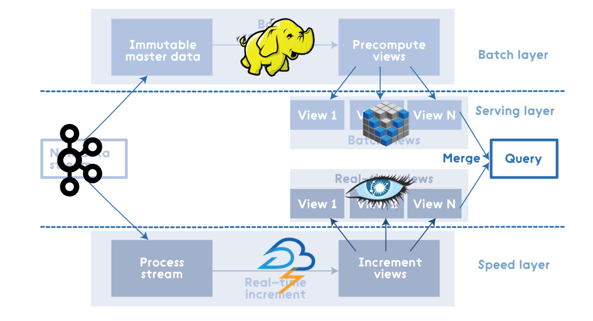